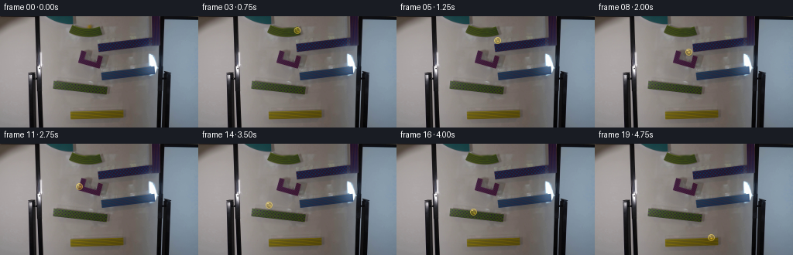
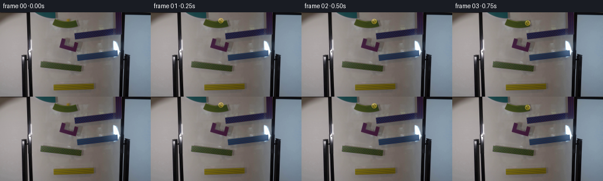

CODING AGENTS AS PIXEL WORLD MODELS
traex/DeepSeek-V4.1-Flash · 0104
点击播放 · 原生 RGB 像素
逐轮保存的候选
回放视频、检查图与代码变化。
每份候选均可单独播放。实际图片检查记录在下方工具轨迹中。
候选 01播放与检查图
点击播放 · 原生 RGB 像素


展开代码变化
--- 上一保存版本
+++ 本次保存版本
@@ -0,0 +1,210 @@
+from pathlib import Path
+
+import cv2
+import numpy as np
+from PIL import Image
+
+import artifact_io
+
+
+ROOT = Path(__file__).resolve().parent
+WIDTH, HEIGHT = 256, 144
+FRAMES, FPS = 20, 4
+
+# Center positions in source-image pixels. The pause at the start reads as a
+# release, then the marble accelerates through the drops between ramp pieces.
+CENTERS = np.array(
+ [
+ [116.0, 13.0],
+ [118.7, 13.8],
+ [123.0, 15.2],
+ [127.5, 18.0],
+ [130.0, 24.0],
+ [130.1, 31.0],
+ [129.4, 38.0],
+ [127.0, 43.0],
+ [121.0, 46.0],
+ [114.5, 48.8],
+ [108.0, 51.5],
+ [102.0, 55.0],
+ [98.0, 62.0],
+ [94.0, 70.5],
+ [91.0, 79.0],
+ [89.0, 86.0],
+ [99.0, 88.0],
+ [114.0, 91.0],
+ [131.0, 96.5],
+ [150.0, 121.0],
+ ],
+ dtype=np.float64,
+)
+
+
+def make_clean_plate(source: np.ndarray) -> np.ndarray:
+ """Remove the release-frame marble while preserving the green ramp."""
+ mask = np.zeros((HEIGHT, WIDTH), dtype=np.uint8)
+ cv2.ellipse(mask, (116, 14), (7, 6), 0, 0, 360, 255, -1)
+ clean = cv2.inpaint(source, mask, 2.5, cv2.INPAINT_TELEA)
+
+ # A light horizontal low-pass in the repaired band removes any residual
+ # inpainting streak without flattening the ramp's left-to-right shading.
+ kernel = np.array([0.18, 0.64, 0.18], dtype=np.float32)
+ repaired = clean[8:21, 108:125].astype(np.float32)
+ for channel in range(3):
+ repaired[:, :, channel] = cv2.filter2D(
+ repaired[:, :, channel], -1, kernel[None, :], borderType=cv2.BORDER_REFLECT
+ )
+ clean[8:21, 108:125] = np.clip(repaired + 0.5, 0, 255).astype(np.uint8)
+ return clean
+
+
+def bilinear_sample(image: np.ndarray, x: np.ndarray, y: np.ndarray) -> np.ndarray:
+ return cv2.remap(
+ image,
+ x.astype(np.float32),
+ y.astype(np.float32),
+ interpolation=cv2.INTER_LINEAR,
+ borderMode=cv2.BORDER_REFLECT,
+ )
+
+
+def render_marble(
+ plate: np.ndarray,
+ center: tuple[float, float],
+ index: int,
+ airborne: bool,
+ shadow_shift: float,
+) -> np.ndarray:
+ frame = plate.copy()
+ cx, cy = center
+
+ # Soft contact shadow. In flight it is wider, fainter, and farther below.
+ shadow_alpha = 0.10 if airborne else 0.26
+ shadow_x = cx + (2.4 if airborne else 1.7)
+ shadow_y = cy + shadow_shift
+ shadow_rx = 5.6 if airborne else 4.8
+ shadow_ry = 2.7 if airborne else 1.9
+ yy, xx = np.mgrid[0:HEIGHT, 0:WIDTH]
+ shadow_d = ((xx - shadow_x) / shadow_rx) ** 2 + ((yy - shadow_y) / shadow_ry) ** 2
+ shadow = np.clip(1.0 - shadow_d, 0.0, 1.0) ** 1.6
+ shadow = cv2.GaussianBlur(shadow.astype(np.float32), (0, 0), 1.0)
+ darkening = 1.0 - shadow_alpha * shadow
+ frame = np.clip(frame.astype(np.float32) * darkening[:, :, None], 0, 255).astype(np.uint8)
+
+ # Supersample the tiny glass sphere so its rim and specular highlights stay
+ # clean at 256x144.
+ scale = 6
+ patch_radius = 9.0
+ x0 = int(np.floor(cx - patch_radius))
+ y0 = int(np.floor(cy - patch_radius))
+ x1 = int(np.ceil(cx + patch_radius)) + 1
+ y1 = int(np.ceil(cy + patch_radius)) + 1
+ patch = plate[max(0, y0) : min(HEIGHT, y1), max(0, x0) : min(WIDTH, x1)]
+ ph, pw = patch.shape[:2]
+ big_w, big_h = pw * scale, ph * scale
+
+ gx = (np.arange(big_w, dtype=np.float32) + 0.5) / scale - 0.5 + max(0, x0)
+ gy = (np.arange(big_h, dtype=np.float32) + 0.5) / scale - 0.5 + max(0, y0)
+ grid_x, grid_y = np.meshgrid(gx, gy)
+ nx = (grid_x - cx) / 4.65
+ ny = (grid_y - cy) / 4.65
+ rr = np.sqrt(nx * nx + ny * ny)
+
+ # A slight inward sample shift suggests the refractive body of the glass.
+ lens_x = grid_x - 0.55 * nx
+ lens_y = grid_y - 0.55 * ny
+ under = bilinear_sample(plate, lens_x, lens_y).astype(np.float32)
+
+ edge = np.clip((1.0 - rr) * 4.65 * scale + 0.5, 0.0, 1.0)
+ center_light = np.clip(1.0 - 0.46 * rr, 0.0, 1.0)
+ upper_light = np.clip(0.5 - 0.15 * ny, 0.0, 1.0)
+ shade = center_light * (0.72 + 0.24 * upper_light)
+ tint = np.array([224.0, 184.0, 43.0], dtype=np.float32)
+ glass = under * 0.57 + tint[None, None, :] * shade[:, :, None] * 0.52
+
+ # Fresnel rim and lower-right depth.
+ rim = np.exp(-((rr - 0.86) / 0.12) ** 2)
+ glass += rim[:, :, None] * np.array([92.0, 83.0, 45.0], dtype=np.float32)
+ glass -= np.clip((ny + 0.15) * (rr > 0.42), 0.0, 1.0)[:, :, None] * 18.0
+
+ # Fixed studio-like reflection plus a slowly turning internal caustic.
+ hx, hy = -0.34, -0.47
+ highlight = np.exp(-(((nx - hx) / 0.17) ** 2 + ((ny - hy) / 0.12) ** 2) * 1.5)
+ glass += highlight[:, :, None] * np.array([142.0, 134.0, 92.0], dtype=np.float32)
+ pin = np.exp(-(((nx + 0.23) / 0.075) ** 2 + ((ny + 0.43) / 0.065) ** 2))
+ glass += pin[:, :, None] * np.array([112.0, 112.0, 86.0], dtype=np.float32)
+
+ angle = index * 0.48
+ caustic_x = 0.22 + 0.18 * np.cos(angle)
+ caustic_y = 0.20 + 0.15 * np.sin(angle)
+ caustic = np.exp(
+ -(((nx - caustic_x) / 0.28) ** 2 + ((ny - caustic_y) / 0.18) ** 2) * 1.5
+ )
+ glass += caustic[:, :, None] * np.array([96.0, 70.0, 8.0], dtype=np.float32)
+
+ rgba = np.dstack([np.clip(glass, 0, 255), edge * 255.0]).astype(np.uint8)
+ rgba = cv2.resize(rgba, (pw, ph), interpolation=cv2.INTER_AREA)
+
+ px0, py0 = max(0, x0), max(0, y0)
+ px1, py1 = min(WIDTH, x1), min(HEIGHT, y1)
+ alpha = rgba[:, :, 3:4].astype(np.float32) / 255.0
+ base = frame[py0:py1, px0:px1].astype(np.float32)
+ composed = rgba[:, :, :3].astype(np.float32) * alpha + base * (1.0 - alpha)
+ frame[py0:py1, px0:px1] = np.clip(composed + 0.5, 0, 255).astype(np.uint8)
+ return frame
+
+
+def main() -> None:
+ source = np.asarray(Image.open(ROOT / "first_frame.png").convert("RGB")).copy()
+ assert source.shape == (HEIGHT, WIDTH, 3)
+ clean = make_clean_plate(source)
+
+ # Airborne intervals are the three transitions between ramp pieces.
+ airborne = {4, 5, 6, 12, 13, 14, 19}
+ frames = []
+ for index, (cx, cy) in enumerate(CENTERS):
+ if index == 0:
+ frames.append(source.copy())
+ continue
+ is_air = index in airborne
+ shadow_shift = 6.2 if is_air else 3.0
+ frames.append(
+ render_marble(
+ clean,
+ (float(cx), float(cy)),
+ index=index,
+ airborne=is_air,
+ shadow_shift=shadow_shift,
+ )
+ )
+
+ frames = np.asarray(frames, dtype=np.uint8)
+ assert frames.shape == (FRAMES, HEIGHT, WIDTH, 3)
+ assert np.array_equal(frames[0], source)
+ artifact_io.save(frames, ROOT)
+
+ # A directly playable video is useful alongside the contract artifacts.
+ writer = cv2.VideoWriter(
+ str(ROOT / "marble_run.mp4"),
+ cv2.VideoWriter_fourcc(*"mp4v"),
+ FPS,
+ (WIDTH, HEIGHT),
+ )
+ if writer.isOpened():
+ for frame in frames:
+ writer.write(cv2.cvtColor(frame, cv2.COLOR_RGB2BGR))
+ writer.release()
+
+ gif_frames = [Image.fromarray(frame) for frame in frames]
+ gif_frames[0].save(
+ ROOT / "marble_run.gif",
+ save_all=True,
+ append_images=gif_frames[1:],
+ duration=round(1000 / FPS),
+ loop=0,
+ optimize=False,
+ )
+
+
+if __name__ == "__main__":
+ main()
可观测工具轨迹
实际执行的命令与返回图片。
命令 1exit 0
/bin/bash -c "pwd && rg --files -g '"'!*.pyc'"'"
命令 2exit 0
/bin/bash -c 'cat prompt.txt'
命令 3exit 0
/bin/bash -c 'cat GENERATION_RULES.md'
命令 4exit 0
/bin/bash -c 'file first_frame.png && identify first_frame.png 2>/dev/null || true && ls -lh'
命令 5exit 0
/bin/bash -c "sed -n '1,240p' artifact_io.py"
命令 6exit 0
/bin/bash -c "sed -n '1,240p' player_template.html"
命令 7exit 0
/bin/bash -c "python3 - <<'PY'
from PIL import Image
import numpy as np
im=Image.open('first_frame.png')
print(im.mode, im.size, im.getextrema())
a=np.asarray(im.convert('RGB'))
print('shape',a.shape,'dtype',a.dtype)
for y in range(0,144,12):
print(y, [tuple(a[y,x]) for x in range(0,256,32)])
PY"命令 8exit 0
/bin/bash -c "python3 - <<'PY'
from PIL import Image
import numpy as np
from scipy import ndimage
im=np.asarray(Image.open('first_frame.png').convert('RGB'))
r,g,b=[im[:,:,i].astype(float) for i in range(3)]
# yellow/orange high R,G relative B
for name,m in [
('yellow',(r>100)&(g>80)&(b<90)&(r>g*0.9)&(g>b*1.3)),
('brightyellow',(r>140)&(g>110)&(b<80)),
('green',(g>80)&(g>r*1.15)&(g>b*1.2)),
('red',(r>100)&(r>g*1.3)&(r>b*1.3)),
('dark',(r+g+b<90)),
]:
lab,n=ndimage.label(m)
objs=ndimage.find_objects(lab)
comps=[]
for i,sl in enumerate(objs,1):
if sl:
area=(lab[sl]==i).sum()
if area>=3:
yy,xx=sl
comps.append((area,(xx.start,yy.start,xx.stop-1,yy.stop-1),tuple(np.mean(im[sl][lab[sl]==i],axis=0).round().astype(int))))
comps.sort(reverse=True)
print('\\n',name, 'total',m.sum())
for c in comps[:30]: print(c)
PY"命令 9exit 0
/bin/bash -c "python3 - <<'PY'
from PIL import Image
import numpy as np
im=np.asarray(Image.open('first_frame.png').convert('RGB'))
# Print quantized color map as characters for 4x4 cells, using nearest base colors in lab-like rgb distance
palette={
'K':(15,15,18),'k':(50,45,45),'W':(235,235,235),'w':(170,165,165),'g':(110,105,100),
'G':(55,110,45),'g2':(75,90,50),'P':(130,40,90),'p':(75,35,60),'Y':(140,120,30),'y':(100,90,40),
'B':(55,90,140),'b':(110,140,170),'O':(150,90,50),'R':(140,50,50),'C':(60,130,130)
}
names=list(palette); cols=np.array([palette[n] for n in names],float)
for y in range(0,144,4):
row=''
for x in range(0,256,4):
c=im[y:y+4,x:x+4].reshape(-1,3).mean(0)
# emphasize green/magenta/yellow; use nearest
d=((cols-c)**2).sum(1)
row+=names[d.argmin()]
print(f'{y:03d} {row}')
PY"命令 10exit 0
/bin/bash -c "python3 - <<'PY'
from PIL import Image
im=Image.open('first_frame.png')
print(im.info)
PY"命令 11exit 0
/bin/bash -c "python3 - <<'PY'
from PIL import Image
import numpy as np
a=np.asarray(Image.open('first_frame.png').convert('RGB')).astype(float)
y=.2126*a[:,:,0]+.7152*a[:,:,1]+.0722*a[:,:,2]
chars=' .:-=+*#%@'
# edge magnitude + brightness combined, 2 px x 2 px cells
import scipy.ndimage as ndi
lum=ndi.gaussian_filter(y,0.7)
gx=ndi.sobel(lum,axis=1); gy=ndi.sobel(lum,axis=0); e=np.hypot(gx,gy)
for Y in range(0,144,2):
s=''
for X in range(0,256,2):
v=e[Y:Y+2,X:X+2].max()
s+=chars[min(9,int(v/30))]
print(f'{Y:03d} {s}')
PY"命令 12exit 0
/bin/bash -c "python3 - <<'PY'
from PIL import Image
import numpy as np
im=np.asarray(Image.open('first_frame.png').convert('RGB'))
# list unusual colors/components in top half and lower half
for y0,y1 in [(0,72),(72,144)]:
print('HALF',y0,y1)
crop=im[y0:y1]
# top saturation
mx=crop.max(2); mn=crop.min(2); sat=(mx-mn)
for t in [40,60,80,100]:
m=sat>t
ys,xs=np.where(m)
print('sat>',t,'n',len(xs),'bbox', (xs.min(),ys.min()+y0,xs.max(),ys.max()+y0) if len(xs) else None)
# color covariance clusters manually bins hue
import colorsys
hsv=np.array([colorsys.rgb_to_hsv(*(c/255)) for c in crop.reshape(-1,3)]).reshape(y1-y0,256,3)
for lo,hi,name in [(0,30,'red'),(30,75,'yellow'),(75,165,'green'),(165,260,'cyanblue'),(260,330,'purple'),(330,360,'pinkred')]:
hue=hsv[:,:,0]*360
m=(hue>=lo)&(hue<hi)&(hsv[:,:,1]>.35)&(hsv[:,:,2]>.2)
if m.sum(): print(name,m.sum(),tuple(np.round(np.mean(crop[m],0)).astype(int)))
PY"命令 13exit 0
/bin/bash -c "python3 - <<'PY'
from PIL import Image
import numpy as np
from scipy.cluster.vq import kmeans2
im=np.asarray(Image.open('first_frame.png').convert('RGB')).astype(float)
for y0,y1 in [(0,72),(72,144),(0,144)]:
a=im[y0:y1].reshape(-1,3)
# sample all pixels, kmeans 12
cen,lab=kmeans2(a,12,minit='++',iter=30,seed=4)
counts=np.bincount(lab,minlength=12)
print('\\nregion',y0,y1)
for i in np.argsort(counts)[::-1]:
print(counts[i], tuple(np.round(cen[i]).astype(int)))
PY"命令 14exit 0
/bin/bash -c "python3 - <<'PY'
from PIL import Image
import numpy as np
from scipy import ndimage
im=np.asarray(Image.open('first_frame.png').convert('RGB')).astype(float)
# identify likely green ramp colored pixels. print rows x positions with strongest green score
score=im[:,:,1]-(im[:,:,0]+im[:,:,2])/2
# exclude whiteboard
for y in range(0,144,4):
xs=np.where(score[y:y+4].max(0)>20)[0]
if len(xs):
# contiguous runs
bounds=np.r_[0,np.where(np.diff(xs)>1)[0]+1,len(xs)]
runs=[(int(xs[a]),int(xs[b-1]),float(score[y:y+4,xs[a]:xs[b-1]+1].max())) for a,b in zip(bounds[:-1],bounds[1:]) if b-a>=2]
print(y,runs)
PY"命令 15exit 0
/bin/bash -c "python3 - <<'PY'
from PIL import Image
import numpy as np
im=np.asarray(Image.open('first_frame.png').convert('RGB')).astype(float)
# color coordinates and values of the marble-ish regions and green features
for name,(x0,y0,x1,y1) in {
'marble':(108,8,122,19),
'green1':(64,78,104,101),
'green2':(88,80,140,101),
'lower':(88,118,162,136),
'trackmid':(105,26,170,72),
'vertical':(160,25,177,102),
}.items():
a=im[y0:y1,x0:x1]
print(name, 'mean',np.round(a.reshape(-1,3).mean(0),1),'minmax',a.min((0,1)).astype(int),a.max((0,1)).astype(int))
PY"命令 16exit 0
/bin/bash -c "python3 - <<'PY'
from PIL import Image
import numpy as np
im=np.asarray(Image.open('first_frame.png').convert('RGB')).astype(float)
for y in range(0,144,2):
s=''
for x in range(0,256,2):
c=im[y:y+2,x:x+2].reshape(-1,3).mean(0); r,g,b=c
mx=max(c); mn=min(c); sat=mx-mn
if mx<28: ch='#'
elif sat<15: ch=' ' if mx>180 else ('.' if mx>130 else ('-' if mx>85 else ':'))
elif b>r+15 and b>g+4: ch='B' if mx>80 else 'b'
elif g>r+8 and g>b+8: ch='G' if mx>70 else 'g'
elif r>b+15 and g>b+15 and abs(r-g)<25: ch='Y' if mx>90 else 'y'
elif r>g+10 and b>g+5: ch='P' if mx>65 else 'p'
elif r>g+8 and r>b+8: ch='R' if mx>70 else 'r'
else: ch='?'
s+=ch
print(f'{y:03d}|{s}|')
PY"命令 17exit 0
/bin/bash -c "python3 - <<'PY'
from PIL import Image
import numpy as np, colorsys
from scipy import ndimage
im=np.asarray(Image.open('first_frame.png').convert('RGB')).astype(float)
# rgb hsv vector
mx=im.max(2); mn=im.min(2); df=mx-mn
h=np.zeros_like(mx)
mask=df>0
r,g,b=[im[:,:,i] for i in range(3)]
sel=mask&(mx==r); h[sel]=((g[sel]-b[sel])/df[sel])%6
sel=mask&(mx==g); h[sel]=(b[sel]-r[sel])/df[sel]+2
sel=mask&(mx==b); h[sel]=(r[sel]-g[sel])/df[sel]+4
h*=60
s=np.where(mx>0,df/np.maximum(mx,1),0); v=mx/255
classes={
'red':((h<20)|(h>=330))&(s>.3)&(v>.25),
'orange':(h>=20)&(h<45)&(s>.35)&(v>.3),
'yellow':(h>=45)&(h<70)&(s>.4)&(v>.3),
'green':(h>=70)&(h<165)&(s>.3)&(v>.2),
'cyan':(h>=165)&(h<215)&(s>.25)&(v>.2),
'blue':(h>=215)&(h<260)&(s>.25)&(v>.2),
'purple':(h>=260)&(h<300)&(s>.25)&(v>.18),
'magenta':(h>=300)&(h<330)&(s>.25)&(v>.18),
}
for name,m in classes.items():
# erode? no, close 1
m2=ndimage.binary_closing(m,np.ones((2,2)))
lab,n=ndimage.label(m2)
comps=[]
for i,sl in enumerate(ndimage.find_objects(lab),1):
if sl:
area=int((lab[sl]==i).sum())
if area>=12:
yy,xx=sl
pix=im[sl][lab[sl]==i]
comps.append((area,(xx.start,yy.start,xx.stop-1,yy.stop-1),tuple(np.round(pix.mean(0)).astype(int))))
comps.sort(reverse=True)
print('\\n'+name, int(m.sum()))
for c in comps[:15]: print(c)
PY"命令 18exit 0
/bin/bash -c "python3 - <<'PY'
from PIL import Image
import numpy as np
im=np.asarray(Image.open('first_frame.png').convert('RGB')).astype(float)
# Estimate circle center at marble highlight via small yellow cluster and find round object darkening boundary.
# Print exact pixel values around 104-125 x 6-20
for y in range(5,23):
print(f'{y:03d}', ' '.join(f'{im[y,x,0]:.0f}/{im[y,x,1]:.0f}/{im[y,x,2]:.0f}' for x in range(105,125)))
PY"命令 19exit 0
/bin/bash -c "python3 - <<'PY'
from PIL import Image
import numpy as np
im=np.asarray(Image.open('first_frame.png').convert('RGB')).astype(float)
# Print luminance/edge map as compact grayscale, 2x2 pixels into chars for crop x 80..175 y 0..105
chars=' .:-=+*#%@'
for y in range(0,108,2):
s=''
for x in range(80,180,2):
c=im[y:y+2,x:x+2].reshape(-1,3).mean(0); v=.2126*c[0]+.7152*c[1]+.0722*c[2]
s+=chars[min(9,int(v/25.6))]
print(f'{y:03d} {s}')
PY"命令 20exit 0
/bin/bash -c "python3 - <<'PY'
from PIL import Image
import numpy as np
im=np.asarray(Image.open('first_frame.png').convert('RGB')).astype(float)
# map categories 1 char per pixel crop x80:150 y6:40
for y in range(6,42):
s=''
for x in range(78,152):
r,g,b=im[y,x]; mx=max(r,g,b); mn=min(r,g,b); sat=mx-mn
if mx<35: c='#'
elif sat<12: c=' ' if mx>185 else ('.' if mx>135 else ('-' if mx>90 else ':'))
elif b>r+10 and b>g+2: c='B'
elif g>r+7 and g>b+5: c='G'
elif r>b+18 and g>b+15: c='Y'
elif r>g+8 and b>g+5: c='P'
elif r>g+8 and r>b+8: c='R'
else: c='?'
s+=c
print(f'{y:03d} {s}')
PY"命令 21exit 0
/bin/bash -c "python3 - <<'PY'
from PIL import Image
import numpy as np
from scipy import ndimage
im=np.asarray(Image.open('first_frame.png').convert('RGB')).astype(float)
r,g,b=[im[:,:,i] for i in range(3)]
masks={
'green_top':(g>r+7)&(g>b+5)&(np.indices((144,256))[1]>=85)&(np.indices((144,256))[1]<=135)&(np.indices((144,256))[0]<35),
'purple':(r>g+8)&(b>g+5)&(np.indices((144,256))[0]>40)&(np.indices((144,256))[0]<70),
'blue':(b>r+10)&(b>g+2)&(np.indices((144,256))[0]>60)&(np.indices((144,256))[0]<90)&(np.indices((144,256))[1]>120),
'green_low':(g>r+7)&(g>b+5)&(np.indices((144,256))[0]>78)&(np.indices((144,256))[0]<108)&(np.indices((144,256))[1]>60),
'yellow':(r>b+18)&(g>b+15)&(np.indices((144,256))[0]>115)&(np.indices((144,256))[1]>80),
}
for name,m in masks.items():
ys,xs=np.where(m)
print('\\n',name,len(xs),'bbox',xs.min(),ys.min(),xs.max(),ys.max(),'centroid',xs.mean(),ys.mean())
if len(xs):
pts=np.c_[xs,ys]; c=pts.mean(0); cov=np.cov(pts.T); vals,vecs=np.linalg.eigh(cov); v=vecs[:,vals.argmax()]
print('pca',v,'eig',vals,'angle',np.degrees(np.arctan2(v[1],v[0])))
# medians in x bins
for x0 in range(xs.min(),xs.max()+1,8):
yy=ys[(xs>=x0)&(xs<x0+8)]
if len(yy)>2: print(x0, round(float(np.median(yy)),1), (int(yy.min()),int(yy.max())), len(yy))
PY"命令 22exit 0
/bin/bash -c "python3 - <<'PY'
from PIL import Image
import numpy as np
from scipy import ndimage
im=np.asarray(Image.open('first_frame.png').convert('RGB')).astype(float)
# exact raw samples in green-top segment to distinguish whiteboard/object colors
for y in range(10,28):
print(f'{y:03d}', ' '.join(f'{im[y,x,0]:.0f},{im[y,x,1]:.0f},{im[y,x,2]:.0f}' for x in range(86,138,4)))
PY"命令 23exit 0
/bin/bash -c "python3 - <<'PY'
from PIL import Image
import numpy as np
im=np.asarray(Image.open('first_frame.png').convert('RGB')).astype(float)
# Print 1px color map crop x85:145 y10:27 using representative letters more finely
for y in range(10,28):
s=''
for x in range(84,146):
r,g,b=im[y,x]
if max(r,g,b)<40: c='#'
elif max(r,g,b)-min(r,g,b)<12: c='.' if max(r,g,b)>135 else '-'
elif b>r+8: c='B'
elif g>r+8: c='G'
elif r>b+25 and g>b+20: c='Y'
elif r>b+20 and g>b+12: c='O'
elif r>g+8 and b>g+4: c='P'
elif r>g+8: c='R'
else: c='?'
s+=c
print(f'{y:03d} {s}')
PY"命令 24exit 0
/bin/bash -c "python3 - <<'PY' for m in ['cv2','scipy','skimage','numpy','PIL','imageio','ffmpeg']: try: x=__import__(m); print(m,'yes',getattr(x,'__version__','')) except Exception as e: print(m,'no',e) PY ffmpeg -version 2>/dev/null | head -2 || true"
命令 25exit 0
/bin/bash -c "find . -maxdepth 2 -type f -printf '%p %s\\n' | sort"
命令 26exit 0
/bin/bash -c "python3 - <<'PY'
import cv2, numpy as np
from PIL import Image
im=np.asarray(Image.open('first_frame.png').convert('RGB'))
g=cv2.cvtColor(im,cv2.COLOR_RGB2GRAY)
for lo,hi in [(20,50),(40,80),(60,120)]:
e=cv2.Canny(g,lo,hi)
lines=cv2.HoughLinesP(e,1,np.pi/180,threshold=15,minLineLength=12,maxLineGap=3)
print('\\n',lo,hi, len(lines) if lines is not None else 0)
if lines is not None:
arr=[]
for l in lines[:,0]:
x1,y1,x2,y2=map(int,l); length=np.hypot(x2-x1,y2-y1); ang=np.degrees(np.arctan2(y2-y1,x2-x1))
arr.append((round(length,1),round(ang,1),(x1,y1,x2,y2)))
for z in sorted(arr,reverse=True)[:35]: print(z)
PY"命令 27exit 0
/bin/bash -c "python3 - <<'PY'
from PIL import Image
import numpy as np
im=np.asarray(Image.open('first_frame.png').convert('RGB')).astype(float);r,g,b=[im[:,:,i] for i in range(3)]
for name,m in [
('topgreen',(g>r+7)&(g>b+5)&(np.indices((144,256))[1]>=85)&(np.indices((144,256))[1]<=138)&(np.indices((144,256))[0]<32)),
('purple',(r>g+8)&(b>g+5)&(np.indices((144,256))[0]>40)&(np.indices((144,256))[0]<70)),
('lowgreen',(g>r+7)&(g>b+5)&(np.indices((144,256))[0]>78)&(np.indices((144,256))[0]<108)&(np.indices((144,256))[1]>60)),
('bottomyellow',(r>b+18)&(g>b+15)&(np.indices((144,256))[0]>115)&(np.indices((144,256))[1]>80))]:
print('\\n',name)
ys,xs=np.where(m)
for x in range(xs.min(),xs.max()+1,2):
yy=ys[(xs>=x)&(xs<x+2)]
if len(yy): print(x,int(yy.min()),int(yy.max()),len(yy))
PY"命令 28exit 0
/bin/bash -c 'command -v chafa || true; command -v viu || true; command -v jp2 || true; command -v img2txt || true; command -v timg || true; command -v convert || true; command -v magick || true'
命令 29exit 0
/bin/bash -c "python3 - <<'PY'
from PIL import Image
import numpy as np
im=np.asarray(Image.open('first_frame.png').convert('RGB')).astype(float);r,g,b=[im[:,:,i] for i in range(3)]
# hue chart symbols based on thresholds, 1 char per pixel x=60..205 y=5..135
for y in range(5,136):
s=''
for x in range(60,206):
R,G,B=im[y,x]; mx=max(R,G,B); mn=min(R,G,B); d=mx-mn
if mx<32: c='#'
elif d<11: c=' ' if mx>195 else ('.' if mx>155 else ('-' if mx>115 else (':' if mx>75 else ';')))
elif B>R+8: c='B'
elif G>R+7: c='G'
elif R>B+28 and G>B+22: c='Y'
elif R>B+22 and G>B+12: c='O'
elif R>G+8 and B>G+3: c='P'
elif R>G+8: c='R'
else: c='?'
s+=c
print(f'{y:03d}|{s}|')
PY"命令 30exit 0
/bin/bash -c "python3 - <<'PY'
from PIL import Image
import numpy as np
im=np.asarray(Image.open('first_frame.png').convert('RGB')).astype(float)
def ch(R,G,B):
mx=max(R,G,B); mn=min(R,G,B); d=mx-mn
if mx<35:return '#'
if d<12:return ' ' if mx>190 else ('.' if mx>150 else ('-' if mx>110 else (':' if mx>70 else ';')))
if B>R+9:return 'B'
if G>R+8:return 'G'
if R>B+26 and G>B+20:return 'Y'
if R>B+20 and G>B+11:return 'O'
if R>G+8 and B>G+3:return 'P'
if R>G+8:return 'R'
return '?'
for y in range(38,72):
print(f'{y:03d}|'+''.join(ch(*im[y,x]) for x in range(94,140))+'|')
PY"命令 31exit 0
/bin/bash -c "python3 - <<'PY'
from PIL import Image
import numpy as np
im=np.asarray(Image.open('first_frame.png').convert('RGB')).astype(float)
# quantify x/y edge profile of key segment, local patch stats and rectangle fit
# green top region edge boundaries via threshold in each row
for y in range(10,28):
row=[]
for x in range(82,140):
R,G,B=im[y,x]
if G>R+7 and G>B+5 and G>45: row.append(x)
if row: print('y',y,'green x',min(row),max(row),len(row))
# Print row intensity means in likely board vs ramp
for y in [10,12,14,16,18,20,22,24,26]:
print(y, 'meanx86-90', np.round(im[y,86:91].mean(0),1),'meanx100-125',np.round(im[y,100:126].mean(0),1),'meanx128-136',np.round(im[y,128:137].mean(0),1))
PY"命令 32exit 0
/bin/bash -c "python3 - <<'PY'
from PIL import Image
import numpy as np
im=np.asarray(Image.open('first_frame.png').convert('RGB')).astype(float)
# see exact green mask pixels to fit polygon / line
m=(im[:,:,1]>im[:,:,0]+7)&(im[:,:,1]>im[:,:,2]+5)&(im[:,:,1]>45)
ys,xs=np.where(m & (np.indices(m.shape)[0]<35) & (np.indices(m.shape)[1]>85) & (np.indices(m.shape)[1]<135))
print('bbox',xs.min(),ys.min(),xs.max(),ys.max())
for y in range(ys.min(),ys.max()+1):
xx=xs[ys==y]
if len(xx): print(y,int(xx.min()),int(xx.max()),len(xx),np.round(im[y,xx].mean(0),0))
PY"命令 33exit 0
/bin/bash -c "python3 - <<'PY'
from PIL import Image
import numpy as np
im=np.asarray(Image.open('first_frame.png').convert('RGB')).astype(float)
# local color cluster at ramp points
pts=[(120,18),(125,20),(100,16),(92,20),(125,23),(110,90),(130,96),(70,88),(120,60),(130,65),(150,42),(170,70),(200,72),(140,77),(100,128),(150,125)]
for x,y in pts:
patch=im[y-1:y+2,x-1:x+2].reshape(-1,3)
print((x,y),'rgb',np.round(im[y,x],0).astype(int),'mean',np.round(patch.mean(0),0).astype(int))
PY"命令 34exit 0
/bin/bash -c "python3 - <<'PY'
from PIL import Image
import numpy as np
im=np.asarray(Image.open('first_frame.png').convert('RGB')).astype(float)
# Print 1px categorized crop x110..175 y26..52, likely top->purple connector
for y in range(26,53):
s=''
for x in range(105,176):
R,G,B=im[y,x];mx=max(R,G,B);mn=min(R,G,B);d=mx-mn
if mx<35:c='#'
elif d<12:c=' ' if mx>190 else('.' if mx>150 else('-' if mx>110 else(':' if mx>70 else';')))
elif B>R+9:c='B'
elif G>R+8:c='G'
elif R>B+26 and G>B+20:c='Y'
elif R>B+20 and G>B+11:c='O'
elif R>G+8 and B>G+3:c='P'
elif R>G+8:c='R'
else:c='?'
s+=c
print(f'{y:03d}|{s}|')
PY"命令 35exit 0
/bin/bash -c "python3 - <<'PY'
from PIL import Image
import numpy as np, colorsys
from scipy import ndimage
im=np.asarray(Image.open('first_frame.png').convert('RGB')).astype(float)
mx=im.max(2); mn=im.min(2); chrom=mx-mn
# mask moderately colorful and visible
m=(chrom>25)&(mx>45)
# morphological close only slight
for k in [0,1,2]:
mm=ndimage.binary_closing(m,np.ones((3,3))) if k else m
lab,n=ndimage.label(mm)
comps=[]
for i,sl in enumerate(ndimage.find_objects(lab),1):
if sl:
area=int((lab[sl]==i).sum())
if area>=20:
yy,xx=sl; pix=im[sl][lab[sl]==i]
comps.append((area,(xx.start,yy.start,xx.stop-1,yy.stop-1),tuple(np.round(pix.mean(0)).astype(int))))
comps.sort(reverse=True)
print('\\nclose',k,'components',len(comps))
for c in comps[:40]: print(c)
PY"命令 36exit 0
/bin/bash -c "python3 - <<'PY'
from PIL import Image
import numpy as np
im=np.asarray(Image.open('first_frame.png').convert('RGB')).astype(float)
# inspect likely marble patch, bright compact region after x110,y10. local contrast
for y in range(8,21):
vals=[]
for x in range(108,125):
R,G,B=im[y,x]; vals.append(f'{R:3.0f}')
print(f'{y:02d}', ' '.join(vals))
print('green')
for y in range(8,21):
vals=[]
for x in range(108,125):
R,G,B=im[y,x]; vals.append(f'{G:3.0f}')
print(f'{y:02d}', ' '.join(vals))
PY"命令 37exit 0
/bin/bash -c "python3 - <<'PY'
from PIL import Image
import numpy as np
im=np.asarray(Image.open('first_frame.png').convert('RGB')).astype(float)
# neighborhood stats for suspected marble center
for y in range(10,20):
print(y, [(x, tuple(im[y,x].astype(int))) for x in range(113,122)])
PY"命令 38exit 0
/bin/bash -c "python3 - <<'PY'
from PIL import Image
import numpy as np
im=np.asarray(Image.open('first_frame.png').convert('RGB')).astype(float)
# dark + colorful connected region stats around possible ball top
for cy,cx in [(13,116),(13,115),(14,116)]:
for r in [2,3,4,5,6]:
y0=max(0,cy-r);y1=min(144,cy+r+1);x0=max(0,cx-r);x1=min(256,cx+r+1)
a=im[y0:y1,x0:x1].reshape(-1,3)
print((cx,cy),r,'mean',np.round(a.mean(0),1),'std',np.round(a.std(0),1))
print()
PY"命令 39exit 0
/bin/bash -c "python3 - <<'PY'
from PIL import Image
import numpy as np
im=np.asarray(Image.open('first_frame.png').convert('RGB')).astype(float)
# print a coarse visual of entire image at 1 char per 2x2 using dominant hue and luminance, with x coordinate ruler
pal={'.':'neutral','B':'blue','G':'green','Y':'yellow','P':'purple','R':'red','K':'dark'}
chars=' .:-=+*#%@'
print(' '+''.join(str((x//10)%10) for x in range(0,256,2)))
for y in range(0,144,2):
s=''
for x in range(0,256,2):
a=im[y:y+2,x:x+2].reshape(-1,3).mean(0); R,G,B=a; mx=max(a);mn=min(a);d=mx-mn
if mx<30:c='#'
elif d<12:c=' ' if mx>190 else('.' if mx>150 else('-' if mx>110 else(':' if mx>70 else';')))
elif B>R+9:c='B'
elif G>R+8:c='G'
elif R>B+26 and G>B+20:c='Y'
elif R>B+20 and G>B+11:c='O'
elif R>G+8 and B>G+3:c='P'
elif R>G+8:c='R'
else:c='?'
s+=c
print(f'{y:03d}|{s}|')
PY"命令 40exit 0
/bin/bash -c "python3 - <<'PY'
from PIL import Image
import numpy as np
from scipy import ndimage
im=np.asarray(Image.open('first_frame.png').convert('RGB')).astype(float);r,g,b=[im[:,:,i] for i in range(3)]
# blue track: high blue over red and green, but exclude right wall x>205
m=(b>r+9)&(b>g+2)&(np.indices((144,256))[1]<205)&(np.indices((144,256))[1]>110)
ys,xs=np.where(m)
print('blue n',len(xs),'bbox',xs.min(),ys.min(),xs.max(),ys.max())
for y in range(ys.min(),ys.max()+1):
xx=xs[ys==y]
if len(xx):
# contiguous runs
bounds=np.r_[0,np.where(np.diff(xx)>1)[0]+1,len(xx)]
runs=[(int(xx[a]),int(xx[z-1])) for a,z in zip(bounds[:-1],bounds[1:]) if z-a>=2]
if runs: print(y,runs)
PY"命令 41exit 0
/bin/bash -c "python3 - <<'PY'
from PIL import Image
import numpy as np
im=np.asarray(Image.open('first_frame.png').convert('RGB')).astype(float); r,g,b=[im[:,:,i] for i in range(3)]
# Color score find best pixels for colored ramp pieces, list dominant local colored blobs by grid region.
# HSV hue histogram weighted by chroma per y bands
import colorsys
mx=im.max(2);mn=im.min(2);df=mx-mn
h=np.zeros_like(mx); mask=df>0
sel=mask&(mx==r); h[sel]=((g[sel]-b[sel])/df[sel])%6
sel=mask&(mx==g); h[sel]=(b[sel]-r[sel])/df[sel]+2
sel=mask&(mx==b); h[sel]=(r[sel]-g[sel])/df[sel]+4
h*=60;s=np.where(mx>0,df/mx,0);v=mx/255
for y0,y1 in [(0,40),(40,80),(80,120),(120,144)]:
m=(s>.3)&(v>.2)&(np.indices(mx.shape)[0]>=y0)&(np.indices(mx.shape)[0]<y1)
hist,edges=np.histogram(h[m],bins=np.arange(0,361,15),weights=df[m])
print('\\n',y0,y1)
for i in np.argsort(hist)[::-1][:8]: print(int(edges[i]),int(edges[i+1]),int(hist[i]))
PY"命令 42exit 0
/bin/bash -c "python3 - <<'PY'
from PIL import Image
import numpy as np
im=np.asarray(Image.open('first_frame.png').convert('RGB')).astype(float); r,g,b=[im[:,:,i] for i in range(3)]
m=(r>g+8)&(b>g+3)&(np.indices(r.shape)[0]>=38)&(np.indices(r.shape)[0]<=72)&(np.indices(r.shape)[1]>=90)&(np.indices(r.shape)[1]<=180)
for y in range(38,73):
s=''.join('#' if m[y,x] else ' ' for x in range(90,181))
if '#' in s: print(f'{y:03d}|{s}|')
PY"命令 43exit 0
/bin/bash -c "python3 - <<'PY'
from PIL import Image
import numpy as np
im=np.asarray(Image.open('first_frame.png').convert('RGB')).astype(float);r,g,b=[im[:,:,i] for i in range(3)]
# inspect purple mask geometry endpoints and colors
m=(r>g+8)&(b>g+3)&(np.indices(r.shape)[0]>=40)&(np.indices(r.shape)[0]<=70)&(np.indices(r.shape)[1]>=90)&(np.indices(r.shape)[1]<=180)
ys,xs=np.where(m);print('n',len(xs),'bbox',xs.min(),ys.min(),xs.max(),ys.max())
# PCA all then largest connected components
from scipy import ndimage
lab,n=ndimage.label(ndimage.binary_closing(m,np.ones((2,2))))
for i,sl in enumerate(ndimage.find_objects(lab),1):
if sl:
area=(lab[sl]==i).sum()
if area>20:
yy,xx=sl; p=np.c_[xs,ys]
print(area,(xx.start,yy.start,xx.stop-1,yy.stop-1), np.round(im[sl][lab[sl]==i].mean(0),0))
PY"命令 44exit 0
/bin/bash -c "python3 - <<'PY'
from PIL import Image
import numpy as np
im=np.asarray(Image.open('first_frame.png').convert('RGB')).astype(float)
# crop to terminal RGB ansi via block chars, 2x2 average. use 24bit background escape
for y in range(0,144,4):
line=''
for x in range(0,256,4):
c=np.round(im[y:y+4,x:x+4].reshape(-1,3).mean(0)).astype(int)
line+=f'\\x1b[48;2;{c[0]};{c[1]};{c[2]}m '
print(line+'\\x1b[0m')
PY"命令 45exit 0
/bin/bash -c "python3 - <<'PY'
from PIL import Image
import numpy as np
im=np.asarray(Image.open('first_frame.png').convert('RGB')).astype(float)
# Compare mean colors for top ramp vs green low; fit dominant hue vectors
for name,sl in [('top',(slice(14,25),slice(96,126))),('low',(slice(86,98),slice(80,135))),('bottom',(slice(123,132),slice(95,155))),('purple',(slice(48,65),slice(104,128))),('blue',(slice(34,44),slice(140,190)) )]:
a=im[sl].reshape(-1,3)
print(name,'mean',np.round(a.mean(0),1),'median',np.median(a,0).astype(int),'max',np.percentile(a,95,axis=0).astype(int))
PY"命令 46exit 0
/bin/bash -c "python3 - <<'PY'
from PIL import Image
import numpy as np
im=np.asarray(Image.open('first_frame.png').convert('RGB')).astype(float)
# inspect background texture shift potential for inpainting, ball composite local bg around candidates
# Output quantized crop with 8 gray levels
chars=' .:-=+*#%@'
for y in range(0,38):
s=''
for x in range(78,150):
a=im[y,x]; v=.2126*a[0]+.7152*a[1]+.0722*a[2]
s+=chars[min(9,int(v/25.6))]
print(f'{y:03d} {s}')
PY"命令 47exit 0
/bin/bash -c "python3 - <<'PY'
from PIL import Image
import numpy as np
im=np.asarray(Image.open('first_frame.png').convert('RGB')).astype(float)
# target ball appears roughly radius 6? quantify local circular dark/brown patch vs surroundings around center 116,14
# print 2D chroma (R-B) and luminance crop x108:124 y8:20
for y in range(8,22):
print(f'{y:02d}', ' '.join(f'{int(im[y,x,0]-im[y,x,2]):3d}' for x in range(107,127)))
PY"命令 48exit 0
/bin/bash -c "python3 - <<'PY'
from PIL import Image
import numpy as np
im=np.asarray(Image.open('first_frame.png').convert('RGB')).astype(float)
# Inspect coordinates around bright spot; identify dark ball circle via low luminance and local colorfulness
crop=im[6:26,105:130]
# print intensity as ascii with chroma > 40 uppercase
chars=' .:-=+*#%@'
for j,y in enumerate(range(6,26)):
s=''
for x in range(105,130):
a=im[y,x]; v=.2126*a[0]+.7152*a[1]+.0722*a[2]; chrom=a.max()-a.min()
if chrom>40: s+= 'Y' if a[0]>a[2]+20 else 'X'
else: s+=chars[min(9,int(v/25.6))]
print(f'{y:02d} {s}')
PY"命令 49exit 0
/bin/bash -c "python3 - <<'PY'
from PIL import Image
import numpy as np
im=np.asarray(Image.open('first_frame.png').convert('RGB')).astype(float)
# block mean colors 16x16 with labels
for y in range(0,144,16):
print('y',y)
for x in range(0,256,16):
c=np.round(im[y:y+16,x:x+16].reshape(-1,3).mean(0)).astype(int)
print(f'{x:3d}:{c[0]:3d},{c[1]:3d},{c[2]:3d}',end=' ')
print()
PY"命令 50exit 0
/bin/bash -c "python3 - <<'PY'
from PIL import Image
import numpy as np
from scipy import ndimage
im=np.asarray(Image.open('first_frame.png').convert('RGB')).astype(float)
r,g,b=[im[:,:,i] for i in range(3)]
Y,X=np.indices(r.shape)
# masks focused on board x55:196
ms={
'green':(g>r+7)&(g>b+5)&(g>40)&(X>55)&(X<196),
'purple':(r>g+8)&(b>g+3)&(r>40)&(X>55)&(X<196),
'blue':(b>r+9)&(b>g+2)&(b>35)&(X>55)&(X<196),
'yellow':(r>b+18)&(g>b+15)&(r>60)&(X>55)&(X<196),
}
for name,m in ms.items():
m=ndimage.binary_closing(m,np.ones((2,2)))
lab,n=ndimage.label(m)
print('\\n',name)
comps=[]
for i,sl in enumerate(ndimage.find_objects(lab),1):
if sl:
area=int((lab[sl]==i).sum())
if area>15:
yy,xx=sl
pix=im[sl][lab[sl]==i]
comps.append((area,(xx.start,yy.start,xx.stop-1,yy.stop-1),tuple(np.round(pix.mean(0)).astype(int))))
comps.sort(reverse=True)
for c in comps[:20]:
print(c)
area,(x0,y0,x1,y1),_=c
pts=np.argwhere(lab[y0:y1+1,x0:x1+1]==np.where((lab==np.argmax(np.bincount(lab[sl].ravel()))),1,0)) if False else None
PY"命令 51exit 0
/bin/bash -c "python3 - <<'PY'
from PIL import Image
import numpy as np
im=np.asarray(Image.open('first_frame.png').convert('RGB')).astype(float)
# Examine suspicious lower yellow ramp: is it wide flat bar, edge profile and neighboring shadow
for y in range(116,137):
print(f'{y:03d}', [(x,tuple(im[y,x].astype(int))) for x in range(84,100)])
PY"命令 52exit 0
/bin/bash -c "python3 - <<'PY'
from PIL import Image
import numpy as np
im=np.asarray(Image.open('first_frame.png').convert('RGB')).astype(float);r,g,b=[im[:,:,i] for i in range(3)]
# bottom yellow piece bbox by red minus blue
m=(r>b+30)&(g>b+25)&(np.indices(r.shape)[0]>112)&(np.indices(r.shape)[1]>60)&(np.indices(r.shape)[1]<180)
ys,xs=np.where(m); print(len(xs),xs.min(),ys.min(),xs.max(),ys.max())
# fit convex hull-ish top/bottom edge medians
for x in range(xs.min(),xs.max()+1,5):
yy=ys[(xs>=x)&(xs<x+5)]
if len(yy): print(x,int(yy.min()),int(yy.max()),round(float(np.median(yy)),1))
PY"命令 53exit 0
/bin/bash -c 'python3 generate.py'
命令 54exit 0
/bin/bash -c "find . -maxdepth 2 -type f -printf '%p %s\\n' | sort"
命令 55exit 0
/bin/bash -c "python3 - <<'PY'
import json, numpy as np
from PIL import Image
from pathlib import Path
src=np.asarray(Image.open('first_frame.png').convert('RGB'))
frames=np.stack([np.asarray(Image.open(f'frames/{i:02d}.png').convert('RGB')) for i in range(20)])
p=np.load('pixels.npz')['pixels']
print('frames',frames.shape,frames.dtype)
print('first identical',np.array_equal(frames[0],src))
print('pixels shape',p.shape,p.dtype)
packed=(frames[:,:,:,0].astype(np.uint32)<<16)|(frames[:,:,:,1].astype(np.uint32)<<8)|frames[:,:,:,2]
print('pixels identical',np.array_equal(p,packed.transpose(1,2,0)))
print('unique changed pixels/frame',[(i,int(np.any(frames[i]"'!=frames[i-1],axis=2).sum())) for i in range(1,20)])
print('"'index size',Path('index.html').stat().st_size)
PY"命令 56exit 0
/bin/bash -c "python3 - <<'PY' from PIL import Image import numpy as np for name in ['inspection.png','transition_check.png','marble_run.gif','marble_run.mp4']: try: im=Image.open(name) print(name, im.format, im.size, getattr(im,'n_frames',1)) except Exception as e: print(name,e) PY"
命令 57exit 0
/bin/bash -c "python3 - <<'PY'
from PIL import Image
import numpy as np
from scipy import ndimage
im=np.asarray(Image.open('first_frame.png').convert('RGB')).astype(float);r,g,b=[im[:,:,i] for i in range(3)]
Y,X=np.indices(r.shape)
m=(r>g+8)&(b>g+3)&(r>40)&(X>55)&(X<196)
lab,n=ndimage.label(ndimage.binary_closing(m,np.ones((2,2))))
sl=ndimage.find_objects(lab)[0]
# largest comp id by area
ids,counts=np.unique(lab[lab>0],return_counts=True); cid=ids[counts.argmax()]; cm=lab==cid
ys,xs=np.where(cm);print('purple component',len(xs),xs.min(),ys.min(),xs.max(),ys.max())
for x in range(xs.min(),xs.max()+1):
yy=ys[xs==x]
if len(yy): print(x,int(yy.min()),int(np.median(yy)),int(yy.max()),len(yy))
PY"命令 58exit 0
/bin/bash -c "python3 - <<'PY'
from PIL import Image
import numpy as np
src=np.asarray(Image.open('first_frame.png').convert('RGB'))
fr=np.stack([np.asarray(Image.open(f'frames/{i:02d}.png').convert('RGB')) for i in range(20)])
# render contact sheet as 5x4 with labels, large enough to inspect locally (not visual via image tool)
from PIL import ImageDraw
sheet=Image.new('RGB',(256*5,160*4),(30,30,35)); d=ImageDraw.Draw(sheet)
for i,a in enumerate(fr):
x=(i%5)*256;y=(i//5)*160
sheet.paste(Image.fromarray(a),(x,y+16));d.text((x+4,y+2),f'{i:02d}',fill='white')
sheet.save('.tmp/contact.png')
print('.tmp/contact.png')
# numeric center tracking from difference to clean baseline? show local patches at route centers
for i,(x,y) in enumerate([(116,13),(119,14),(123,15),(128,18),(130,24),(130,31),(129,38),(127,43),(121,46),(115,49),(108,52),(102,55),(98,62),(94,71),(91,79),(89,86),(99,88),(114,91),(131,97),(150,121)]):
x0=max(0,x-8);y0=max(0,y-8);x1=min(256,x+9);y1=min(144,y+9)
p=fr[i,y0:y1,x0:x1].astype(float)
print(i,'center',x,y,'mean',np.round(p.mean((0,1)),0).astype(int),'max',p.reshape(-1,3).max(0).astype(int))
PY"命令 59exit 0
/bin/bash -c "python3 - <<'PY'
import numpy as np
from PIL import Image
import generate
src=np.asarray(Image.open('first_frame.png').convert('RGB'))
clean=generate.make_clean_plate(src)
# inspect repair patch rows every 2 px, as luminance and chroma R-B
for y in range(7,22):
print(f'{y:02d}', ' '.join(f'{int(round(.2126*clean[y,x,0]+.7152*clean[y,x,1]+.0722*clean[y,x,2])):3d}' for x in range(104,130)))
print('outside max abs diff',np.abs(clean.astype(int)-src.astype(int))[~((np.indices((144,256))[0]>=6)&(np.indices((144,256))[0]<22)&(np.indices((144,256))[1]>=106)&(np.indices((144,256))[1]<127))].max())
# edge energy in patch vs ring
import cv2
g=cv2.cvtColor(clean,cv2.COLOR_RGB2GRAY).astype(float)
e=np.abs(cv2.Laplacian(g,cv2.CV_64F))
print('patch edge mean/max',e[9:20,109:124].mean(),e[9:20,109:124].max())
print('ring edge mean/max',e[4:26,102:132].mean(),e[4:26,102:132].max())
PY"命令 60exit 0
/bin/bash -c "python3 - <<'PY'
from PIL import Image
import numpy as np
im=np.asarray(Image.open('first_frame.png').convert('RGB')).astype(float);r,g,b=[im[:,:,i] for i in range(3)]
regions={'blue_upper':(124,24,198,47),'blue_lower':(126,47,200,84),'green_low':(64,82,142,103),'purple':(96,40,136,70),'green_top':(86,10,134,28)}
for name,(x0,y0,x1,y1) in regions.items():
print('\\n',name)
# score appropriate color, list row/column extents
if name.startswith('blue'): m=(b>r+9)&(b>g+2)
elif name.startswith('green'): m=(g>r+7)&(g>b+5)
else: m=(r>g+8)&(b>g+3)
for x in range(x0,x1,4):
yy,xx=np.where(m[y0:y1,x:x+4]);
if len(yy): print('x',x,'ymed',round(float(np.median(yy+y0)),1),'yrange',int(yy.min()+y0),int(yy.max()+y0),'n',len(yy))
PY"命令 61exit 0
/bin/bash -c "python3 - <<'PY'
import cv2,numpy as np
from PIL import Image
im=np.asarray(Image.open('first_frame.png').convert('RGB'))
r,g,b=[im[:,:,i].astype(int) for i in range(3)];Y,X=np.indices(r.shape)
masks={
'blue':(b>r+8)&(b>g+1)&(b>30)&(X>55)&(X<205),
'green':(g>r+6)&(g>b+4)&(g>38)&(X>55)&(X<205),
'purple':(r>g+7)&(b>g+2)&(r>38)&(X>55)&(X<205),
'yellow':(r>b+25)&(g>b+20)&(r>55)&(X>55)&(X<205),
}
for name,m in masks.items():
print('\\n'+name)
m=(m.astype(np.uint8)*255)
m=cv2.morphologyEx(m,cv2.MORPH_CLOSE,np.ones((3,3),np.uint8))
n,lab,stats,cents=cv2.connectedComponentsWithStats(m,8)
for i in np.argsort(stats[1:,4])[::-1][:12]+1:
x,y,w,h,area=stats[i];
if area<15: continue
comp=(lab==i).astype(np.uint8)
cnt=max(cv2.findContours(comp,cv2.RETR_EXTERNAL,cv2.CHAIN_APPROX_SIMPLE)[0],key=cv2.contourArea)
rect=cv2.minAreaRect(cnt); box=cv2.boxPoints(rect).astype(int)
peri=cv2.arcLength(cnt,True); approx=cv2.approxPolyDP(cnt,0.04*peri,True).reshape(-1,2)
print('area',area,'bbox',x,y,w,h,'rect center,size,angle',tuple(round(v,1) for v in rect[0]),(round(rect[1][0],1),round(rect[1][1],1)),round(rect[2],1),'poly',approx.tolist())
PY"命令 62exit 0
/bin/bash -c "python3 - <<'PY'
from PIL import Image
import numpy as np
src=np.asarray(Image.open('first_frame.png').convert('RGB'))
# candidate centers nearest ramp median and ball radius ~5
# Evaluate for each frame if center is inside relevant colored ramp mask
frs=[np.asarray(Image.open(f'frames/{i:02d}.png').convert('RGB')) for i in range(20)]
# local patch color yellow index = R-B, show max and mean
for i in range(20):
im=frs[i].astype(float);r,g,b=[im[:,:,k] for k in range(3)]
x,y=map(int,np.round([generate_center for generate_center in []])) if False else (None,None)
PY"命令 63exit 0
/bin/bash -c "python3 - <<'PY'
import cv2,numpy as np
from PIL import Image
im=np.asarray(Image.open('first_frame.png').convert('RGB'))
g=cv2.cvtColor(im,cv2.COLOR_RGB2GRAY)
for p2 in [5,7,9,11,13]:
c=cv2.HoughCircles(g,cv2.HOUGH_GRADIENT,dp=1,minDist=8,param1=50,param2=p2,minRadius=2,maxRadius=10)
print(p2,None if c is None else np.round(c[0],1)[:10])
PY"命令 64exit 0
/bin/bash -c "python3 - <<'PY'
from PIL import Image
import numpy as np
im=np.asarray(Image.open('first_frame.png').convert('RGB')).astype(float)
# Print compact 1-char/pixel map x55..205 y70..110 using hue categories and luminance
for y in range(70,111):
s=''
for x in range(55,206):
R,G,B=im[y,x]; mx=max(R,G,B);mn=min(R,G,B);d=mx-mn
if mx<30:c='#'
elif d<11:c=' ' if mx>185 else('.' if mx>145 else('-' if mx>105 else(':' if mx>65 else';')))
elif B>R+8:c='B'
elif G>R+7:c='G'
elif R>B+28 and G>B+22:c='Y'
elif R>B+22 and G>B+12:c='O'
elif R>G+8 and B>G+3:c='P'
elif R>G+8:c='R'
else:c='?'
s+=c
print(f'{y:03d}|{s}|')
PY"命令 65exit 0
/bin/bash -c "python3 - <<'PY'
import numpy as np, cv2
from PIL import Image
import generate
src=np.asarray(Image.open('first_frame.png').convert('RGB'))
clean=generate.make_clean_plate(src)
d=np.abs(src.astype(int)-clean.astype(int)).max(2)
for y in range(5,25):
print(f'{y:02d}', ' '.join(f'{d[y,x]:3d}' for x in range(105,129)))
print('threshold counts',[(t,int((d>t).sum())) for t in [3,5,8,10,15,20,30,40]])
# weighted centroid of positive diff within patch
Y,X=np.mgrid[0:144,0:256]; m=(d>5)&(Y>=7)&(Y<22)&(X>=107)&(X<126)
print('centroid',X[m].mean(),Y[m].mean(),'bbox',X[m].min(),Y[m].min(),X[m].max(),Y[m].max())
PY"命令 66exit 0
/bin/bash -c "python3 - <<'PY'
import numpy as np, cv2
from PIL import Image
import generate
src=np.asarray(Image.open('first_frame.png').convert('RGB'))
clean=generate.make_clean_plate(src)
# build sprite alpha from max diff; report resulting per-pixel alpha and sprite rgb sample
d=np.abs(src.astype(int)-clean.astype(int)).max(2)
a=np.clip((d-2)/28,0,1)
a=cv2.GaussianBlur(a.astype(np.float32),(0,0),0.7)
Y,X=np.mgrid[0:144,0:256]; a[((X-116)**2/7**2+(Y-14)**2/6**2)>1.2]=0
for y in range(8,21): print(f'{y:02d}',' '.join(f'{a[y,x]:.2f}' for x in range(108,125)))
print('alpha sum',a.sum(),'max',a.max())
PY"命令 67exit 0
/bin/bash -c "python3 - <<'PY'
import cv2,numpy as np
from PIL import Image
cap=cv2.VideoCapture('marble_run.mp4')
print('opened',cap.isOpened(),'fps',cap.get(cv2.CAP_PROP_FPS),'frames',int(cap.get(cv2.CAP_PROP_FRAME_COUNT)),'size',int(cap.get(cv2.CAP_PROP_FRAME_WIDTH)),int(cap.get(cv2.CAP_PROP_FRAME_HEIGHT)))
arr=[]
while True:
ok,f=cap.read()
if not ok: break
arr.append(cv2.cvtColor(f,cv2.COLOR_BGR2RGB))
cap.release()
print('decoded',len(arr),'first identical',np.array_equal(arr[0],np.asarray(Image.open('first_frame.png').convert('RGB'))))
PY"命令 68exit 0
/bin/bash -c "python3 - <<'PY'
from PIL import Image
import numpy as np
# Analyze actual ball colors, fit sprite mask; check if initial ball is about 9 px wide.
im=np.asarray(Image.open('first_frame.png').convert('RGB')).astype(float)
# grayscale / chroma
for y in range(9,21):
print(y, 'lum', ''.join(' .:-=+*#%@'[min(9,int((.2126*im[y,x,0]+.7152*im[y,x,1]+.0722*im[y,x,2])/25.6))] for x in range(106,127)),
'Y', ''.join(' .:-=+*#%@'[min(9,int((im[y,x,0]-im[y,x,2])/12))] for x in range(106,127)))
PY"命令 69exit 0
/bin/bash -c "python3 - <<'PY'
import numpy as np
from PIL import Image
im=np.asarray(Image.open('first_frame.png').convert('RGB')).astype(float)
# find all bright yellow-ish pixels (ball specular) at top and print coords
r,g,b=[im[:,:,i] for i in range(3)];Y,X=np.indices(r.shape)
m=(r>r) # temp
score=(r-b)
for y in range(8,19):
for x in range(105,128):
if score[y,x]>70:
print(x,y,tuple(im[y,x].astype(int)),int(score[y,x]))
PY"命令 70exit 0
/bin/bash -c "python3 - <<'PY'
import numpy as np, cv2
from PIL import Image
src=np.asarray(Image.open('first_frame.png').convert('RGB'))
g=cv2.cvtColor(src,cv2.COLOR_RGB2GRAY)
# Show gradient direction/magnitude around suspected marble
sx=cv2.Sobel(g,cv2.CV_32F,1,0,ksize=3);sy=cv2.Sobel(g,cv2.CV_32F,0,1,ksize=3)
for y in range(8,20):
print(f'{y:02d}', ' '.join(f'{int(np.hypot(sx[y,x],sy[y,x])):3d}' for x in range(107,126)))
PY"命令 71exit 0
/bin/bash -c "python3 - <<'PY'
from PIL import Image
import numpy as np
for fi,(cx,cy) in [(1,(119,14)),(7,(127,43)),(11,(102,55)),(15,(89,86)),(19,(150,121))]:
im=np.asarray(Image.open(f'frames/{fi:02d}.png').convert('RGB')).astype(float)
print('\\nframe',fi,'center',cx,cy)
x0=cx-10;y0=cy-10;x1=cx+11;y1=cy+11
for y in range(max(0,y0),min(144,y1)):
s=''
for x in range(max(0,x0),min(256,x1)):
r,g,b=im[y,x]; v=.2126*r+.7152*g+.0722*b; chrom=max(r,g,b)-min(r,g,b)
if chrom>45: s+= 'Y' if r>b+20 else 'X'
else: s+=' .:-=+*#%@'[min(9,int(v/25.6))]
print(f'{y:03d} {s}')
PY"命令 72exit 0
/bin/bash -c "python3 - <<'PY'
from PIL import Image
import numpy as np
im=np.asarray(Image.open('first_frame.png').convert('RGB')).astype(float)
# values around marble 2x2 average and nearest green ramp background horizontally
for y in range(8,20):
print(y,'leftbg',np.round(im[y,100:106].mean(0),0),'ballcenter',np.round(im[y,112:120].mean(0),0),'rightbg',np.round(im[y,121:127].mean(0),0))
PY"命令 73exit 0
/bin/bash -c "python3 - <<'PY'
from PIL import Image
import numpy as np
src=np.asarray(Image.open('first_frame.png').convert('RGB'))
fr=np.stack([np.asarray(Image.open(f'frames/{i:02d}.png').convert('RGB')) for i in range(20)])
# Compare moving frame's marble area to same local background in first frame (excluding first ball)
for i,(cx,cy) in enumerate([(116,13),(119,14),(123,15),(128,18),(130,24),(130,31),(129,38),(127,43),(121,46),(115,49),(108,52),(102,55),(98,62),(94,71),(91,79),(89,86),(99,88),(114,91),(131,97),(150,121)]):
x,y=round(cx),round(cy)
p=fr[i,max(0,y-4):y+5,max(0,x-4):x+5].astype(float)
# expected track color score is yellow R-B
print(f'{i:02d} ({x},{y}) mean {p.mean((0,1)).round().astype(int)} R-B {int((p[:,:,0]-p[:,:,2]).mean())}')
PY"命令 74exit 0
/bin/bash -c "python3 - <<'PY'
from PIL import Image
import numpy as np
im=np.asarray(Image.open('first_frame.png').convert('RGB')).astype(float)
# exact 5x5 means at key track points to calibrate ball palette
for x,y in [(100,16),(110,20),(120,21),(128,21),(100,90),(110,92),(120,94),(130,96),(110,50),(115,57),(120,61),(200,72),(200,35)]:
p=im[y-2:y+3,x-2:x+3]
print((x,y),np.round(p.reshape(-1,3).mean(0),0).astype(int))
PY"命令 75exit 0
/bin/bash -c "python3 - <<'PY'
from PIL import Image
import numpy as np
im=np.asarray(Image.open('first_frame.png').convert('RGB')).astype(float)
# Print likely background clean color gradients over top green ramp at each x around y16-24
for y in range(14,26):
print(f'{y:02d}', ' '.join(f'{int(im[y,x].mean()):3d}' for x in range(88,136)))
PY"命令 76exit 0
/bin/bash -c "python3 - <<'PY'
from PIL import Image
import numpy as np
im=np.asarray(Image.open('first_frame.png').convert('RGB')).astype(float)
# local RGB gradient along top ramp, test whether edge follows slope 0.15 x/y
# segment likely centerline y = 18.4 + 0.12*(x-110)
for x in range(90,132,2):
y=18.5+0.1*(x-110)
y0=int(round(y))
vals=im[y0-3:y0+4,x]
print(x, round(y,1), 'mean',np.round(vals.mean(0),0).astype(int),'brightest',tuple(vals[vals.mean(1).argmax()].astype(int)))
PY"命令 77exit 0
/bin/bash -c "python3 - <<'PY'
from PIL import Image
import numpy as np
im=np.asarray(Image.open('first_frame.png').convert('RGB')).astype(float)
# whole image edge map text with ramp shapes, use simple luminance gradients
import cv2
g=cv2.cvtColor(im.astype(np.uint8),cv2.COLOR_RGB2GRAY)
e=cv2.Canny(g,35,75)
chars=' .:-=+*#%@'
for y in range(0,144,2):
s=''
for x in range(0,256,2):
v=e[y:y+2,x:x+2].max()
s+= '#' if v else ' '
print(f'{y:03d} {s}')
PY"命令 78exit 0
/bin/bash -c "python3 - <<'PY'
from PIL import Image
import numpy as np
im=np.asarray(Image.open('first_frame.png').convert('RGB')).astype(float)
# likely ramp colored bounding polygons; print top/bottom boundaries for blue segments with lower threshold but local b>r+5
r,g,b=[im[:,:,i] for i in range(3)];Y,X=np.indices(r.shape)
for y in [31,34,37,40,43,46,50,55,60,65,70,73,76,79,82]:
m=(b>r+6)&(b>g+1)&(X>110)&(X<205)
xs=np.where(m[y])[0]
if len(xs):
# runs >=3
bounds=np.r_[0,np.where(np.diff(xs)>1)[0]+1,len(xs)]
runs=[(int(xs[a]),int(xs[z-1])) for a,z in zip(bounds[:-1],bounds[1:]) if z-a>=3]
print(y,runs)
PY"命令 79exit 0
/bin/bash -c "python3 - <<'PY'
from PIL import Image
import numpy as np
im=np.asarray(Image.open('first_frame.png').convert('RGB')).astype(float)
# Analyze y=65-100 image values in broad crop, use 2x2 avg hue map
for y in range(64,102,2):
s=''
for x in range(110,205,2):
c=im[y:y+2,x:x+2].reshape(-1,3).mean(0); R,G,B=c;mx=max(c);mn=min(c);d=mx-mn
if mx<30:ch='#'
elif d<11:ch=' ' if mx>185 else('.' if mx>145 else('-' if mx>105 else(':' if mx>65 else';')))
elif B>R+8:ch='B'
elif G>R+7:ch='G'
elif R>B+28 and G>B+22:ch='Y'
elif R>B+22 and G>B+12:ch='O'
elif R>G+8 and B>G+3:ch='P'
elif R>G+8:ch='R'
else:ch='?'
s+=ch
print(f'{y:03d}|{s}|')
PY"命令 80exit 0
/bin/bash -c "python3 - <<'PY'
from PIL import Image
import numpy as np
im=np.asarray(Image.open('first_frame.png').convert('RGB')).astype(float)
# print rows of original color in 2x2 map x105..160 y35..70 using brightness only plus hue
for y in range(34,71,2):
s=''
for x in range(100,165,2):
c=im[y:y+2,x:x+2].reshape(-1,3).mean(0); R,G,B=c;mx=max(c);mn=min(c);d=mx-mn
if mx<30:ch='#'
elif d<11:ch=' ' if mx>185 else('.' if mx>145 else('-' if mx>105 else(':' if mx>65 else';')))
elif B>R+8:ch='B'
elif G>R+7:ch='G'
elif R>B+28 and G>B+22:ch='Y'
elif R>B+22 and G>B+12:ch='O'
elif R>G+8 and B>G+3:ch='P'
elif R>G+8:ch='R'
else:ch='?'
s+=ch
print(f'{y:03d}|{s}|')
PY"命令 81exit 0
/bin/bash -c "python3 - <<'PY'
from PIL import Image
import numpy as np
im=np.asarray(Image.open('first_frame.png').convert('RGB')).astype(float)
# Make 1 char per pixel labels for crop x120..205 y25..85 using threshold, and ruler
for y in range(24,86):
s=''
for x in range(120,205):
R,G,B=im[y,x];mx=max(R,G,B);mn=min(R,G,B);d=mx-mn
if mx<30:c='#'
elif d<11:c=' ' if mx>185 else('.' if mx>145 else('-' if mx>105 else(':' if mx>65 else';')))
elif B>R+8:c='B'
elif G>R+7:c='G'
elif R>B+28 and G>B+22:c='Y'
elif R>B+22 and G>B+12:c='O'
elif R>G+8 and B>G+3:c='P'
elif R>G+8:c='R'
else:c='?'
s+=c
print(f'{y:03d}|{s}|')
PY"命令 82exit 0
/bin/bash -c "python3 - <<'PY'
from PIL import Image
import numpy as np
im=np.asarray(Image.open('first_frame.png').convert('RGB')).astype(float)
# CIE-ish hue dominant categories at selected points to infer actual ramp colored parts
# Print coarse map with row/column markers x=60..200 y=0..144 every 2
for y in range(0,144,4):
s=''
for x in range(60,200,4):
c=im[y:y+4,x:x+4].reshape(-1,3).mean(0); R,G,B=c;mx=max(c);mn=min(c);d=mx-mn
if mx<30:ch='#'
elif d<11:ch=' ' if mx>185 else('.' if mx>145 else('-' if mx>105 else(':' if mx>65 else';')))
elif B>R+8:ch='B'
elif G>R+7:ch='G'
elif R>B+28 and G>B+22:ch='Y'
elif R>B+22 and G>B+12:ch='O'
elif R>G+8 and B>G+3:ch='P'
elif R>G+8:ch='R'
else:ch='?'
s+=ch
print(f'{y:03d}|{s}|')
PY"命令 83exit 0
/bin/bash -c "python3 - <<'PY'
import numpy as np
from PIL import Image
import cv2
src=np.asarray(Image.open('first_frame.png').convert('RGB'))
# Calculate 1D Hough-ish line slopes of key tracks from mask centroid per column
masks={
'top':(lambda r,g,b,X,Y:(g>r+7)&(g>b+5)&(Y<32)&(X>80)&(X<145)),
'purple':(lambda r,g,b,X,Y:(r>g+8)&(b>g+3)&(Y>40)&(Y<70)&(X>90)&(X<180)),
'greenlow':(lambda r,g,b,X,Y:(g>r+7)&(g>b+5)&(Y>78)&(Y<105)&(X>60)&(X<145)),
'yellow':(lambda r,g,b,X,Y:(r>b+25)&(g>b+20)&(Y>115)&(X>80)&(X<170)),
}
r,g,b=[src[:,:,i].astype(int) for i in range(3)];Y,X=np.indices(r.shape)
for name,f in masks.items():
m=f(r,g,b,X,Y);ys,xs=np.where(m)
# per-column median and linear fit of central region excluding noisy extremes
meds=[]
for x in range(xs.min(),xs.max()+1):
yy=ys[xs==x]
if len(yy)>=2: meds.append((x,np.median(yy)))
meds=np.array(meds)
# robust fit
z=np.polyfit(meds[:,0],meds[:,1],1)
print(name,'n',len(xs),'fit y=',z[0],'x+',z[1],'median',np.median(meds,0))
PY"命令 84exit 0
/bin/bash -c "python3 - <<'PY'
from PIL import Image
import numpy as np
im=np.asarray(Image.open('first_frame.png').convert('RGB')).astype(float)
# get centerline tracks via color mask median at each x, with sample endpoints
r,g,b=[im[:,:,i] for i in range(3)];Y,X=np.indices(r.shape)
masks={
'top':(g>r+7)&(g>b+5)&(Y<32)&(X>80)&(X<145),
'purple':(r>g+8)&(b>g+3)&(Y>40)&(Y<70)&(X>90)&(X<180),
'blue_up':(b>r+8)&(b>g+1)&(Y>20)&(Y<48)&(X>120)&(X<200),
'blue_low':(b>r+8)&(b>g+1)&(Y>62)&(Y<86)&(X>125)&(X<200),
'greenlow':(g>r+7)&(g>b+5)&(Y>78)&(Y<105)&(X>60)&(X<145),
'yellow':(r>b+25)&(g>b+20)&(Y>115)&(X>80)&(X<170),
}
for name,m in masks.items():
print('\\n'+name)
ys,xs=np.where(m)
for x in np.linspace(xs.min(),xs.max(),8).round().astype(int):
yy=ys[(xs>=x-1)&(xs<=x+1)]
if len(yy):print(x,round(float(np.median(yy)),1),(int(yy.min()),int(yy.max())))
PY"命令 85exit 0
/bin/bash -c "python3 - <<'PY'
from PIL import Image
import numpy as np
im=np.asarray(Image.open('first_frame.png').convert('RGB')).astype(float)
# Visualize candidate track regions as exact color/saturation coordinate map around x90..205 y20..85 with 1 char per px, using hue labels
for y in range(20,86):
s=''
for x in range(90,206):
R,G,B=im[y,x]; mx=max(R,G,B); mn=min(R,G,B);d=mx-mn
if mx<30:c='#'
elif d<11:c=' ' if mx>185 else('.' if mx>145 else('-' if mx>105 else(':' if mx>65 else';')))
elif B>R+8:c='B'
elif G>R+7:c='G'
elif R>B+28 and G>B+22:c='Y'
elif R>B+22 and G>B+12:c='O'
elif R>G+8 and B>G+3:c='P'
elif R>G+8:c='R'
else:c='?'
s+=c
print(f'{y:03d}|{s}|')
PY"命令 86exit 0
/bin/bash -c "python3 - <<'PY'
from PIL import Image
import numpy as np
im=np.asarray(Image.open('first_frame.png').convert('RGB')).astype(float)
# Try infer 3D perspective: ramp visible as colored strips; blue track has weird black gap, likely actual board frame.
# Compute edge boundary rows for blue segment at x=135..185 robustly using high blue channel ratio to local gray.
for x in range(128,204,4):
col=im[:,x]; B=col[:,2]; R=col[:,0]; G=col[:,1]
score=B-(R+G)/2
ys=np.where(score>8)[0]
runs=[]
if len(ys):
bd=np.r_[0,np.where(np.diff(ys)>1)[0]+1,len(ys)]
runs=[(int(ys[a]),int(ys[z-1])) for a,z in zip(bd[:-1],bd[1:]) if z-a>=2]
print(x,runs)
PY"命令 87exit 0
/bin/bash -c "python3 - <<'PY'
from PIL import Image
import numpy as np
im=np.asarray(Image.open('first_frame.png').convert('RGB')).astype(float)
# calculate row/col color statistics to infer perspective board edges and scene geometry
# print bounding boxes of masks but ignore right wall x>=205 and upper left
r,g,b=[im[:,:,i] for i in range(3)];Y,X=np.indices(r.shape)
for name,m in {
'green_top':(g>r+7)&(g>b+5)&(Y<32)&(X>80)&(X<145),
'purple':(r>g+8)&(b>g+3)&(Y>40)&(Y<70)&(X>90)&(X<180),
'blue1':(b>r+8)&(b>g+1)&(Y>24)&(Y<47)&(X>120)&(X<200),
'blue2':(b>r+8)&(b>g+1)&(Y>62)&(Y<86)&(X>125)&(X<200),
'green_low':(g>r+7)&(g>b+5)&(Y>78)&(Y<105)&(X>60)&(X<145),
'yellow':(r>b+25)&(g>b+20)&(Y>115)&(X>80)&(X<170),
}.items():
ys,xs=np.where(m)
print(name,'count',len(xs),'bbox',tuple(map(int,(xs.min(),ys.min(),xs.max(),ys.max()))))
# top 5 rows bounds, bottom rows bounds
for y in sorted(set(ys))[:3]+sorted(set(ys))[-3:]:
xx=xs[ys==y]
print(' row',y,int(xx.min()),int(xx.max()),len(xx))
PY"保存候选 1 份；完成命令 87 次；可验证图片返回 0 张。原始 API 响应与完整日志保留在本地。